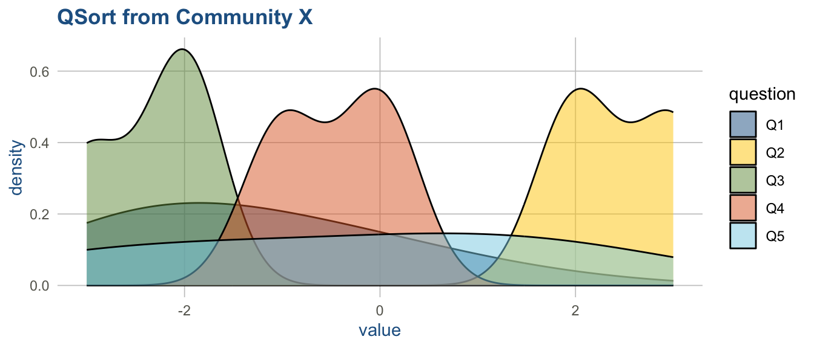
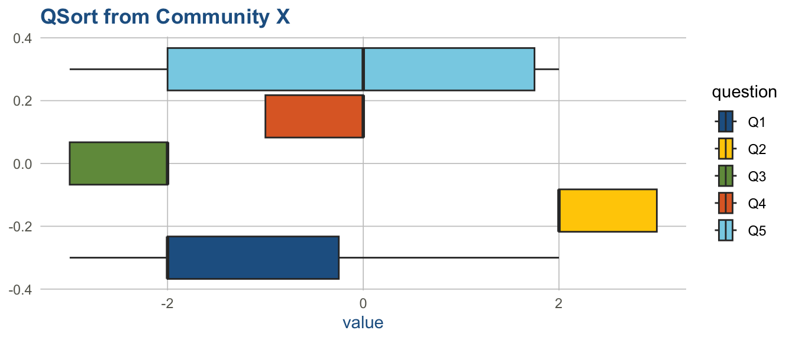
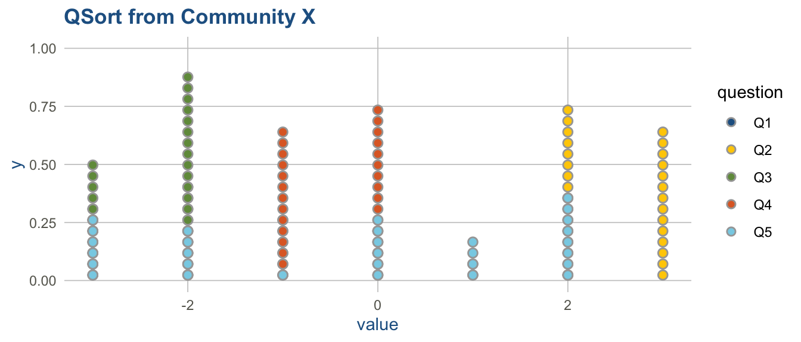

Code
library(ggplot2) # beautiful graphs
library(dplyr) # data wrangling
library(tidyr) # data tidying
library(canhrcolors) # CANHR colors!!!
library(DT) # data table
library(gt) # beautiful tableslibrary(ggplot2) # beautiful graphs
library(dplyr) # data wrangling
library(tidyr) # data tidying
library(canhrcolors) # CANHR colors!!!
library(DT) # data table
library(gt) # beautiful tablesN <- 30 # sample size
id <- seq(1:N)
QSORT <- data.frame(id) # start data frame
# simulated QUESTIONS
QSORT$Q1 <- floor(runif(N, min = -3, max = 3))
QSORT$Q2 <- floor(runif(N, min = 2, max = 4)) # highly ranked
QSORT$Q3 <- floor(runif(N, min = -3, max = -1)) # low ranked
QSORT$Q4 <- floor(runif(N, min = -1, max = 1)) # medium ranked
QSORT$Q5 <- floor(runif(N, min = -3, max = 3))
datatable(QSORT) # replay# summary(QSORT)
library(skimr) # nice descriptive statistics
s <- skim(QSORT) # create a skim
print(s, include_summary = FALSE)
── Variable type: numeric ──────────────────────────────────────────────────────
skim_variable n_missing complete_rate mean sd p0 p25 p50 p75 p100
1 id 0 1 15.5 8.80 1 8.25 15.5 22.8 30
2 Q1 0 1 -1.37 1.38 -3 -2 -2 -0.25 2
3 Q2 0 1 2.47 0.507 2 2 2 3 3
4 Q3 0 1 -2.37 0.490 -3 -3 -2 -2 -2
5 Q4 0 1 -0.467 0.507 -1 -1 0 0 0
6 Q5 0 1 -0.3 1.93 -3 -2 0 1.75 2
hist
1 ▇▇▇▇▇
2 ▇▃▂▁▁
3 ▇▁▁▁▇
4 ▅▁▁▁▇
5 ▇▁▁▁▇
6 ▇▁▅▃▆QSORTlong <- QSORT %>%
pivot_longer(cols = `Q1`:`Q5`,
names_to = "question",
values_to = "value")
datatable(QSORTlong) # replayQSORTlongAGGREGATED <- QSORTlong %>%
group_by(question) %>% # group by y
summarise(mean_value = mean(value,
na.rm = TRUE), # mean of x; removing NA's
n = n()) # count up
datatable(QSORTlongAGGREGATED) # replayQSORTlongAGGREGATED %>%
arrange(desc(mean_value)) %>% # sort by mean value descending
datatable()QSORTlongAGGREGATED %>%
arrange(desc(mean_value)) %>% # sort by mean value descending
gt() %>% # table
tab_header(title = "QSort Table",
subtitle = "Ranked Statements") %>%
data_color(columns = "mean_value",
method = "numeric",
palette = c("#236192", # low
"#FFCD00")) #high| QSort Table | ||
| Ranked Statements | ||
| question | mean_value | n |
|---|---|---|
| Q2 | 2.4666667 | 30 |
| Q5 | -0.3000000 | 30 |
| Q4 | -0.4666667 | 30 |
| Q1 | -1.3666667 | 30 |
| Q3 | -2.3666667 | 30 |
ggplot(QSORTlong,
aes(x = value,
fill = question)) +
geom_density(alpha = .5, # transparency
adjust = 1.75) + # bandwidth adjustment
labs(title = "QSort from Community X") +
scale_fill_canhr() +
theme_canhr() # I didn't realize there was a THEME CANHR!!! :-)
ggplot(QSORTlong,
aes(x = value,
fill = question)) +
geom_boxplot() + #
labs(title = "QSort from Community X") +
scale_fill_canhr() +
theme_canhr() # I didn't realize there was a THEME CANHR!!! :-)
library(ggdist) # 'distribution' geometries
ggplot(QSORTlong,
aes(x = value,
fill = question)) +
stat_dots() +
labs(title = "QSort from Community X") +
scale_fill_canhr() +
theme_canhr() # I didn't realize there was a THEME CANHR!!! :-)